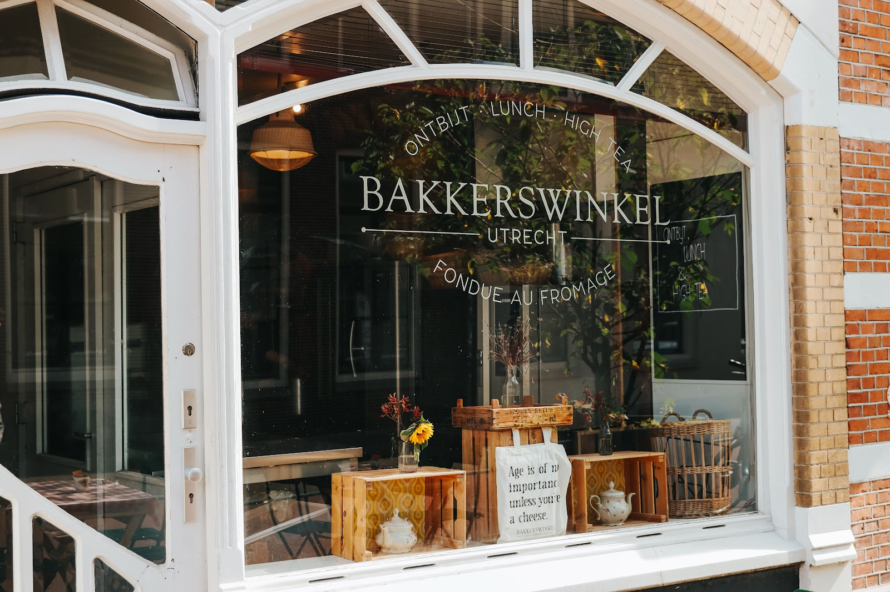
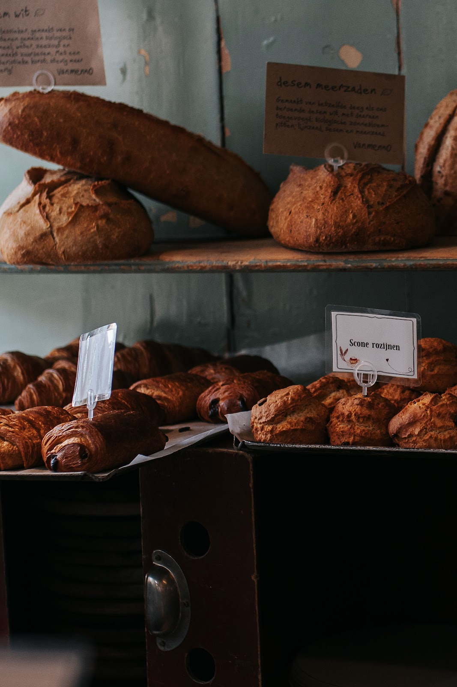
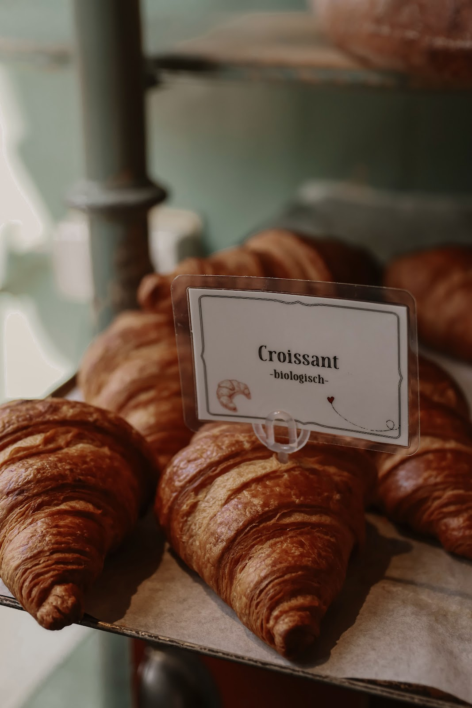
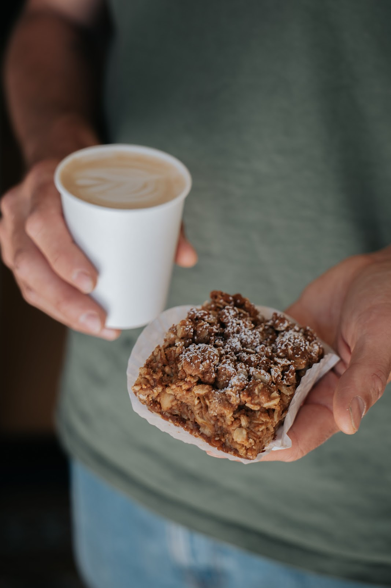
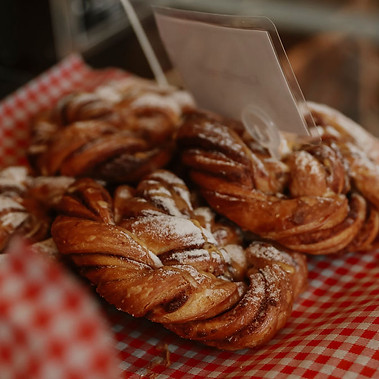
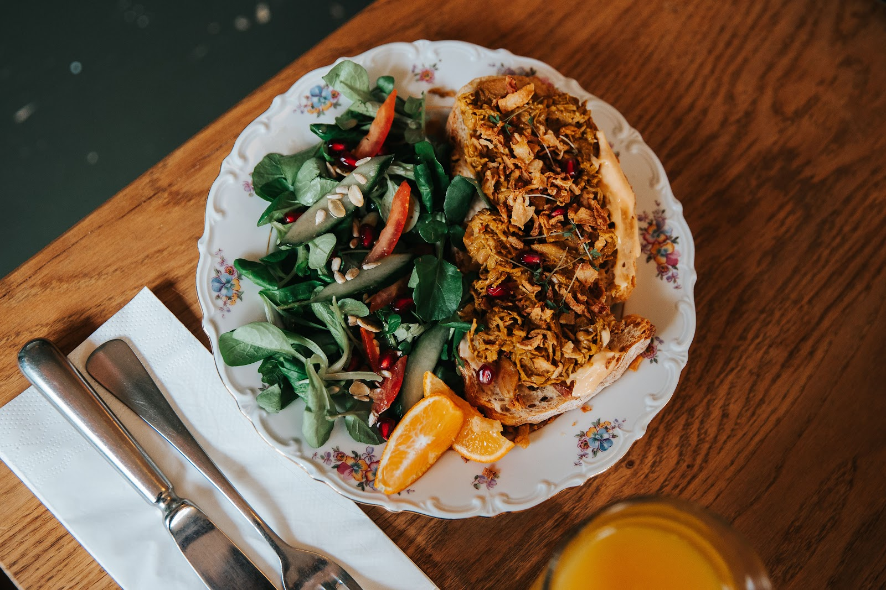
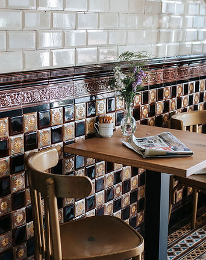
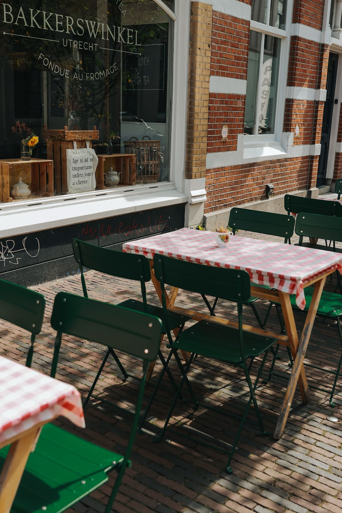
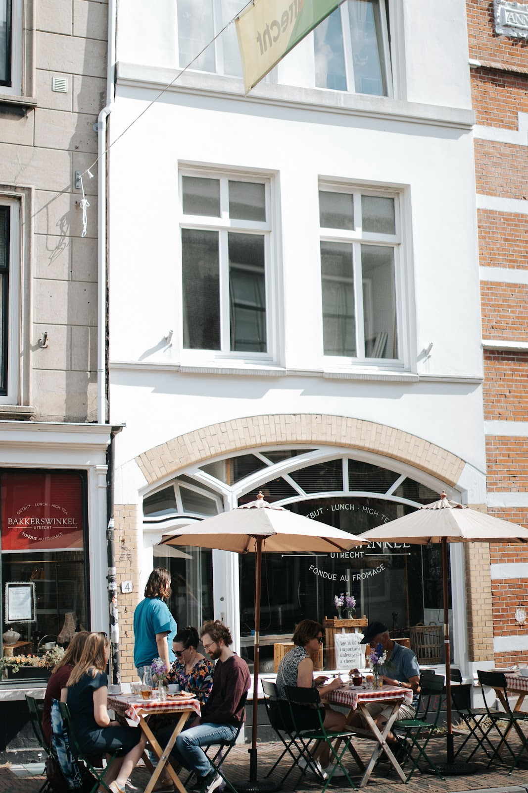

Bakkerij en lunchroom aan de Plompetorengracht
Even binnenlopen bij de bakker.
Ontbijt, lunch of onze bekende high tea onder de oude gewelven. Of neem vers brood van vanMenno en huisgemaakte taart mee uit de winkel.
4,4 uit 992 Google-reviews

Aan de straat
De winkel: alles om mee te nemen.
Aan de Wittevrouwenstraat zit onze winkel. Daar liggen elke dag de heerlijkste broden van vanMenno, naast huisgemaakte taarten, scones, jam en andere zoetigheden. Koffie en sandwiches maken we vers voor je klaar.
- •Brood van vanMenno
- •Huisgemaakte taart
- •Scones en jam
- •Koffie
- •Sandwiches
- •Zoetigheden
Liever bestellen?
Alles uit de winkel kun je ook bestellen om af te halen, los of als take away pakket.



Een trap lager, aan de gracht
Aan tafel in de oude gewelven.
Ons pand staat op de hoek van de Plompetorengracht en de Wittevrouwenstraat, en het bakkersbloed stroomt hier al sinds de 18e eeuw. In de gewelven waar bakkersfamilies vroeger hun brood bakten en serveerden, zit nu ons restaurant. Van buitenaf zie je het niet, maar beneden is veel meer ruimte dan je denkt.

Ontbijt
Rustig beginnen met vers brood en koffie, onder de bogen.

Lunch
Een goed belegde boterham met frisse salade, op bloemetjesservies.

High tea
Onze bekende high tea, aan een tafeltje bij de oude tegels.
Iets te vieren, of kom je met meer dan 7 personen? Neem dan even contact met ons op.
's Avonds, als het seizoen er is
Fondue au fromage.
Als de dagen korter worden, gaan de gewelven 's avonds open voor onze heerlijke kaasfondue. Vanaf vrijdag 6 november is hij weer terug. Reserveer op tijd je tafel.
Bel om te reserverenFondue-avonden
- Wanneer
- donderdag t/m zaterdag
- Hoe laat
- 17:45 – 22:00
- Weer terug
- vrijdag 6 november

Bij mooi weer
Buiten, aan het geruite kleed.
Als de zon schijnt, staan de tafels met rood-witte kleden op de stoep van de Wittevrouwenstraat. Koffie, een stuk taart en kijken wie er langsloopt.
Wat gasten zeggen.
★ 4,4 uit 992 reviews op Google
“De Bakkerswinkel is een plek waar ik regelmatig terugkom. Op het eerste gezicht is het een schattig klein winkeltje, met een hele knusse en gezellige, bijna huiskamerachtige sfeer. Onderaan de gracht hebben ze nog aanzienlijk meer ruimte, maar dat is van buitenaf niet direct zichtbaar.”
“Leuke en ongedwongen sfeer. Appeltaart was heerlijk en de chocoladetaart om je vingers bij af te likken. Fijne ervaring. Mijn nicht vierde haar 50e verjaardag en was ook helemaal blij.”

Kom langs.
Openingstijden
| Maandag | gesloten |
| Dinsdag | 10:00 – 17:00 |
| Woensdag | 10:00 – 17:00 |
| Donderdag | 10:00 – 17:00 |
| Vrijdag | 10:00 – 17:00 |
| Zaterdag | 09:00 – 17:00 |
| Zondag | 09:00 – 17:00 |
Kaasfondue in het seizoen: do t/m za, 17:45 – 22:00.